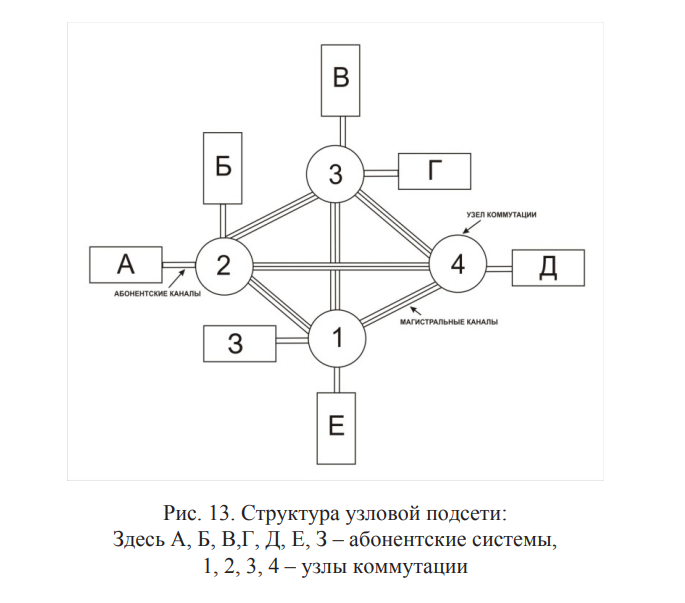

Моноканальные и циклические сети имеют общие каналы, к которым подключаются все абонентские системы сети. Узловые сети коренным образом отличаются от них, т. к. содержат множество различных каналов, соединяющих узлы коммутации и абонентские системы (рис. 13). Все используемые каналы делятся на две группы: • магистральный – канал, соединяющий два узла; • абонентский – канал, связывающий узел с абонентской системой. Классическим примером узловой подсети является телефонная сеть общего пользования (ТФОП). Каналы в такой узловой подсети могут быть аналоговыми либо дискретными. Аналоговые каналы в настоящее время являются основным типом абонентских каналов в телефонных сетях общего пользования, узлы коммутации которой (автоматические телефонные станции – АТС) соединяются между собой цифровыми магистральными каналами. В сетях мобильной радиотелефонной связи второго поколения и выше уже и абонентские каналы, так же как и магистральные, являются цифровыми. Узловой подсетью является и сеть Internet. Пользователи узловой подсети не видят магистральных каналов, их интересуют в первую очередь абонентские, доступ к которым производится в точках подключения посредством абонентского интерфейса. Число абонентских интерфейсов в точках соединения абонентских систем с подсетью определяет «интеллектуальность» подсети
